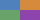

The blend mode defines the formula that must be used to mix the colors with the backdrop.
Compositing and Blending 2 §3.4.1
Each mode's formula has a page under §10.

normal.multiply: each quarter's green alone, as in the swatch at x 120.screen: yellow, cyan and magenta where two overlap, white where all
three do.overlay
overlay, on blue and orange stripes: each stripe darkened under
the letters, blue to #00037b, orange to #ad1500.A Note: Applying a blendmode other than normal to the element must establish a new stacking context.
The
red square, screen, holds a blue 20px square with z-index: -1.